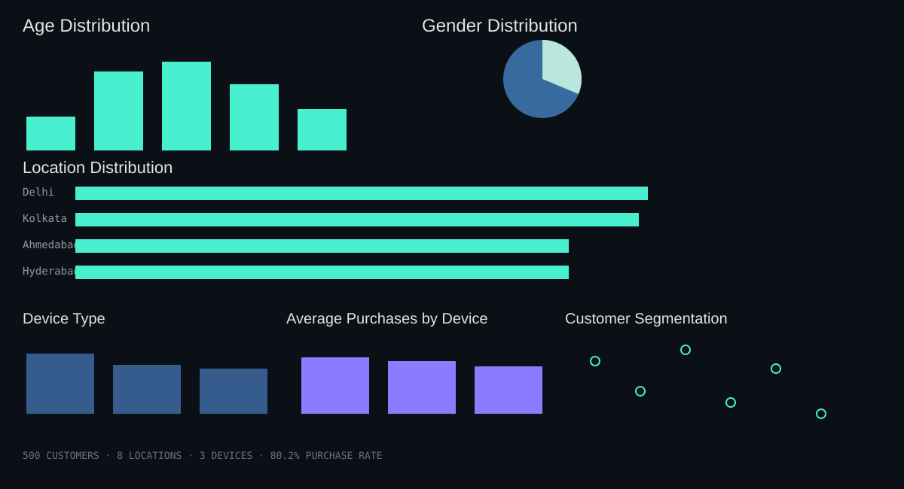

CASE STUDY · E-COMMERCECustomer Behaviour
Customer Behaviour
Decoded.
500 customer records explored across profile, device, geography, browsing, cart activity and purchases.
AgeGenderLocationDeviceClusters
Open interactive case study →